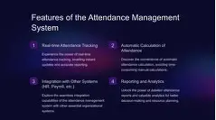

My Projects
SkillSwap
Peer-to-peer skill exchange platform using HTML, CSS, JavaScript and Supabase.
Tech: HTML, CSS, JavaScript, Supabase
Live GitHubVTU Result App
Web application to check VTU results using USN.
Tech: HTML, CSS, JavaScript
Live GitHub
Smart Attendance
RFID based smart attendance system using Arduino/ESP32.
Tech: Arduino, ESP32, RFID
View GitHubVidyut Rakshak
IoT based power monitoring system using ESP32 and Blynk.
Tech: ESP32, IoT, Blynk
View GitHub
Configurable RISC Processor (16/32/64-bit)
Designed a configurable RISC processor using Verilog HDL supporting 16-bit, 32-bit and 64-bit architectures. Implemented ALU, Control Unit, Register File, Program Counter and Memory modules and verified using Vivado simulation.
Tech: Verilog HDL, Xilinx Vivado, GTKWave
View GitHub